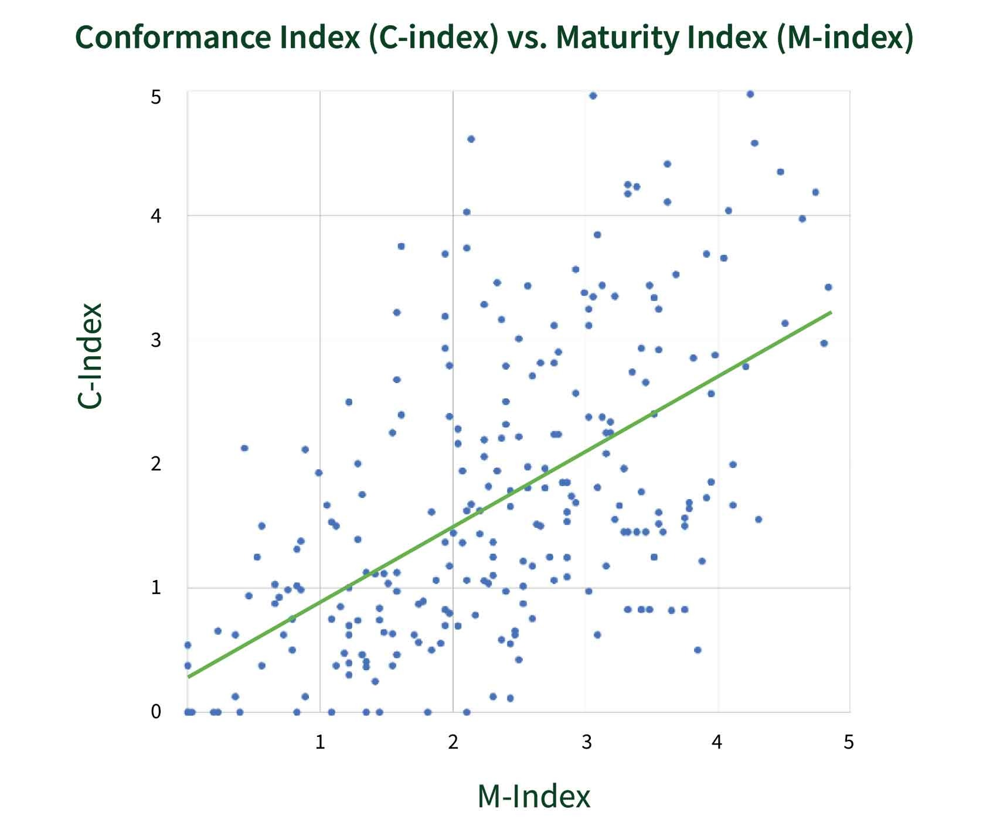

In Figure A, a scatter plot shows the distribution of agencies on a 0-to-5 scale across the x-axis representing maturity (m-index) and the y-axis representing conformance (c-index), with a heavy concentration of respondents located in the bottom and left of the graph. A dark red trend line shows an upward trend, indicating that, as respondent’s maturity increased, their conformance also generally tended to increase. Table 3 further details the number of respondents who fell into specific brackets.
As Figure A depicts, reporting entities fall across the scale from zero to five on both axes, with a heavy concentration of reporting entities located in the bottom and left of the graph. The red trend line shows an upward trend, indicating that generally, as a reporting entity’s maturity increased, their conformance also tended to increase. Thus, reporting entities with greater capacity to execute activities related to accessibility, such as testing or training, tended to have more conformant ICT products.